從地震、火山、斷層與地形的真實證據，反推板塊如何運動。不先背名稱，先問「為什麼」。Infer how plates move from real evidence: earthquakes, volcanoes, faults and landforms. Don't identify first. Explain first.
“Today, do not explain first. Observe first.”今天先不要急著解釋，我們先觀察。
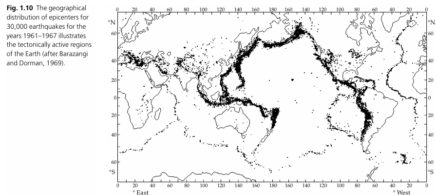
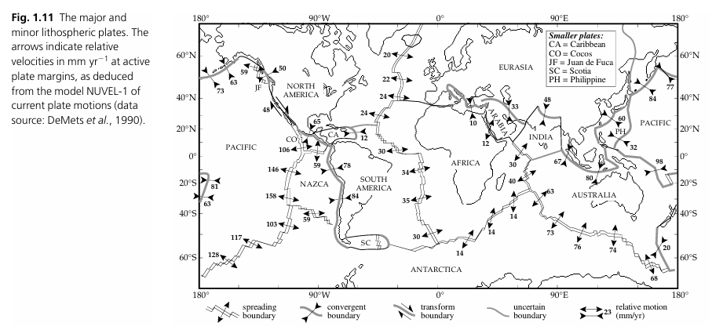
左圖：1961–1967 年 30,000 個地震震央（after Barazangi & Dorman, 1969）。拉動滑桿疊上板塊邊界與相對速度（mm/yr，NUVEL-1；DeMets et al., 1990）。Base: epicentres of 30,000 earthquakes, 1961–1967 (after Barazangi & Dorman, 1969). Drag to overlay plate boundaries and relative velocities in mm/yr (NUVEL-1; DeMets et al., 1990).
你觀察到什麼？What do you observe?
先不要說出任何名詞。只寫下你「看到」的東西。No technical names yet. Write only what you can see.
Observation ≠ Explanation觀察不等於解釋。
Claim地震不是隨機分布於全球。Earthquakes are not randomly distributed around the world.
Evidence全球地震分布圖。The global epicentre map.
Reasoning為什麼？這就是接下來三節課要處理的事。Why? That is the work of the next three lessons.
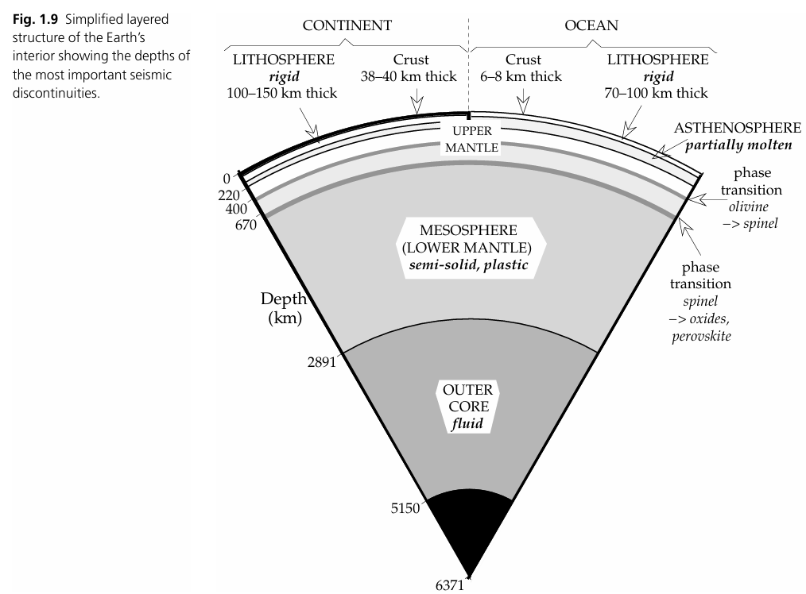
地球內部的簡化分層與主要震波不連續面深度。Simplified layered structure of the Earth showing major seismic discontinuities.
什麼東西在動？What exactly is moving?
板塊 = 剛性的岩石圈（地殼＋最上部地函），漂在部分熔融、可流動的軟流圈上。點選各層看看。A plate is rigid lithosphere (crust + uppermost mantle) riding on the partially molten, flowing asthenosphere. Tap each layer.
選一層，看它在板塊運動中扮演什麼角色。Choose a layer to see its role in plate motion.
二、三個神秘區域2. Three mystery regions
“What is happening underground?”地底下發生了什麼事？
每個區域只給你證據。先用手勢比出板塊怎麼動，再選一個答案。You only get evidence. Show the motion with your hands first, then choose.
三、建立三種板塊模型3. Build the three boundary models
板塊運動 → 應力 → 岩石變形與斷層 → 地震／岩漿 → 地表構造。這條因果鏈是三節課最核心的板書。Plate motion → stress → deformation & faulting → earthquakes / magma → surface structures. This causal chain is the key board diagram of the whole unit.
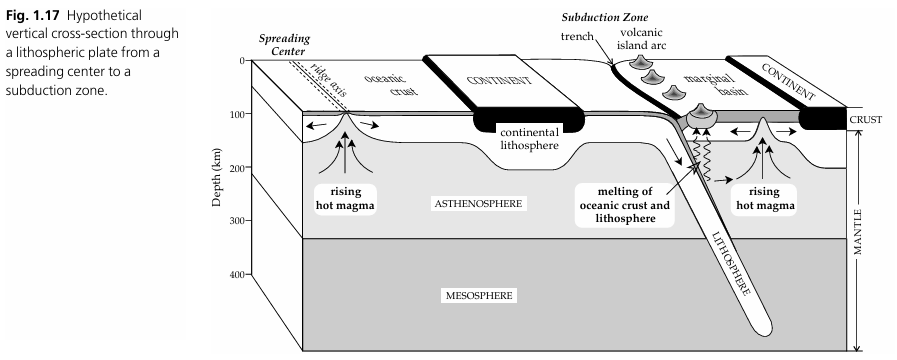
從擴張中心（張裂）到隱沒帶（聚合）的假想垂直剖面：兩種邊界在同一張圖上。Hypothetical section from a spreading centre (divergent) to a subduction zone (convergent): two boundaries on one diagram.
身體動作模型Body model
用雙手表示板塊，一邊做一邊說英文。老師追問：What kind of stress?Use both hands as plates and say the sentence aloud. Teacher follows up: What kind of stress?
← → Plates move apart. tension
→ ← Plates move together. compression
↑ ↓ Plates slide past each other. shear
四、證據實驗室：科學家怎麼知道板塊在動？4. Evidence Lab: how do we know plates move?
板塊構造學說不是一張圖，而是幾十年來多重證據疊出來的模型。四個抽屜，每個抽屜一條證據線。Plate tectonics is not one picture; it is a model built from decades of multiple, independent lines of evidence. Four drawers, four lines of evidence.
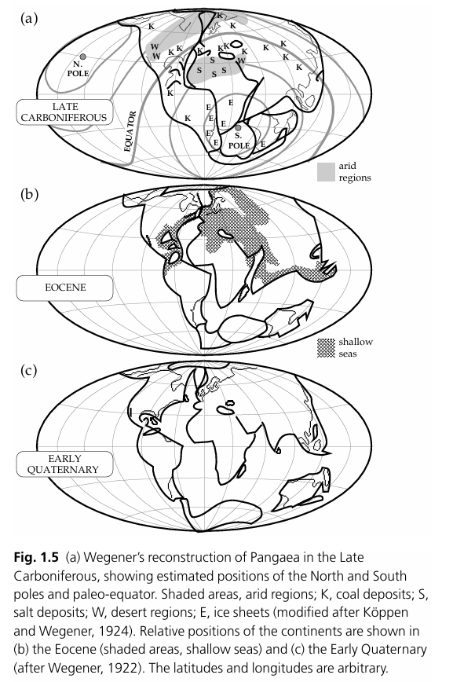
Wegener（1922）的盤古大陸：石炭紀晚期的煤（K）、鹽（S）、沙漠（W）、冰層（E）分布圍繞當時的赤道與極區。Wegener's Pangaea (1922): Late Carboniferous coal (K), salt (S), desert (W) and ice (E) deposits arranged around the palaeo-equator and poles.
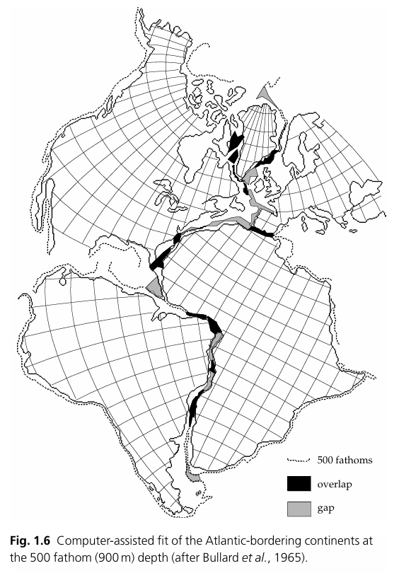
Bullard 等（1965）以 500 噚（900 m）等深線做電腦拼合：重疊與缺口都很小。Bullard et al. (1965): computer fit of the Atlantic-bordering continents at 500 fathoms; overlaps and gaps are small.
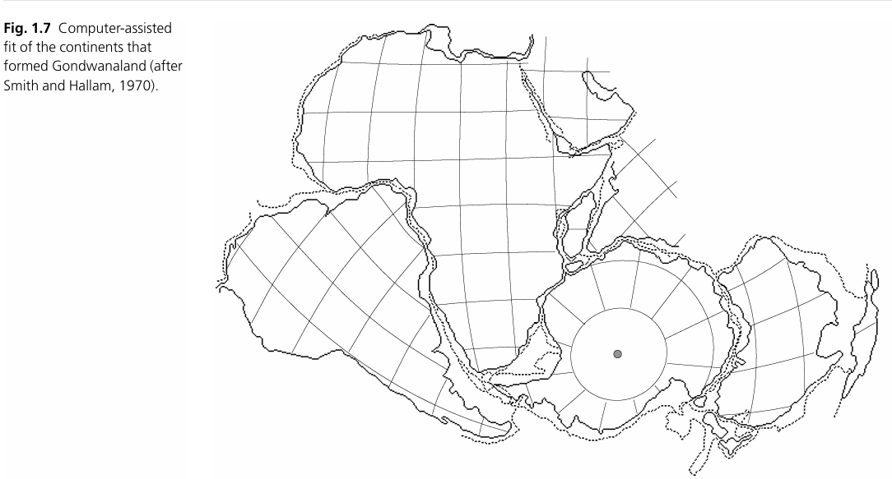
Smith & Hallam（1970）：岡瓦納大陸——南美、非洲、印度、南極、澳洲拼回一塊。Smith & Hallam (1970): Gondwanaland reassembled from South America, Africa, India, Antarctica and Australia.
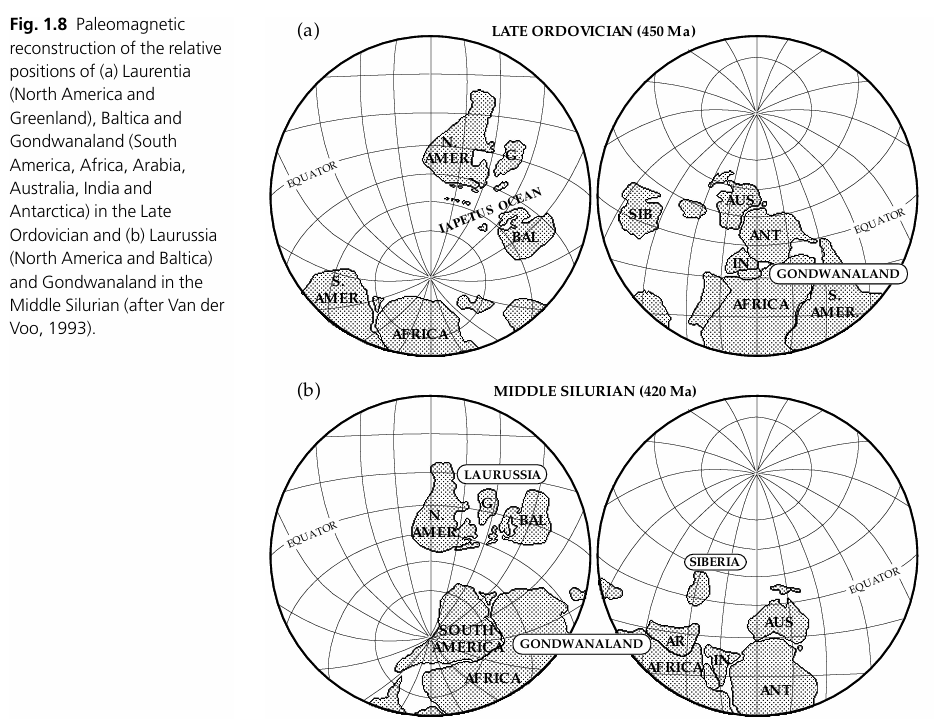
Van der Voo（1993）古地磁復原：450 Ma 與 420 Ma 的 Laurentia、Baltica 與 Gondwanaland 相對位置。Palaeomagnetic reconstruction (Van der Voo, 1993): Laurentia, Baltica and Gondwanaland at 450 Ma and 420 Ma.
思考Think
海岸線能拼合，只是「看起來像」。是什麼讓它從巧合變成證據？（提示：氣候沈積物、化石、岩層、古地磁都指向同一件事。）A coastline fit is only "looks alike". What turns coincidence into evidence? (Hint: climate deposits, fossils, rock belts and palaeomagnetism all point the same way.)
We observe that ______, which is evidence that ______.
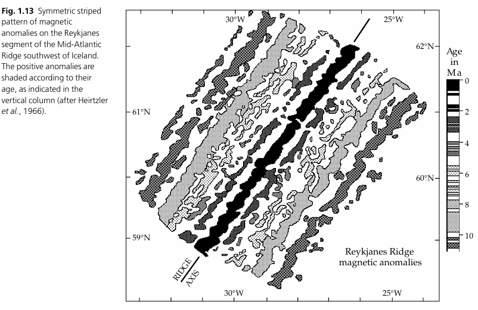
冰島西南 Reykjanes 洋脊：磁異常條紋以洋脊軸為中心左右對稱，愈遠愈老（Heirtzler et al., 1966）。Reykjanes Ridge, SW of Iceland: magnetic stripes symmetric about the ridge axis; older with distance (Heirtzler et al., 1966).
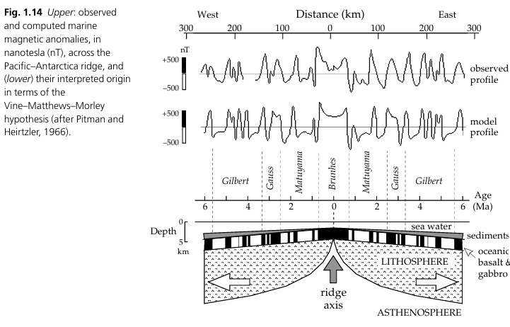
太平洋—南極洋脊的觀測與模型磁異常曲線；Vine–Matthews–Morley：新生地殼記錄當時地磁極性。Observed vs modelled anomalies across the Pacific–Antarctic ridge; Vine–Matthews–Morley: new crust records the field polarity of its time.
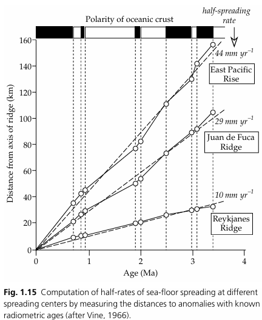
距洋脊距離 vs. 年齡：斜率就是半擴張速率（Vine, 1966）。Distance from ridge vs age: the slope is the half-spreading rate (Vine, 1966).
迷你實驗：算出海底擴張速率Mini-lab: compute a spreading rate
距離 = 半擴張速率 × 年齡。選一條洋脊，拉動年齡，預測異常條紋離洋脊多遠，再回到上圖檢查。distance = half-rate × age. Pick a ridge, drag the age, predict how far the anomaly lies from the axis, then check on the graph above.
≈ 88 km from the ridge axis (each side) · 距洋脊軸兩側各
注意：兩側各 88 km，海盆一共變寬 176 km。全擴張速率 = 2 × 半擴張速率。Note: 88 km on each side means the basin widened by 176 km. Full rate = 2 × half-rate.
Because new crust forms at the ridge and moves away, the age of the sea floor ______ with distance from the axis.
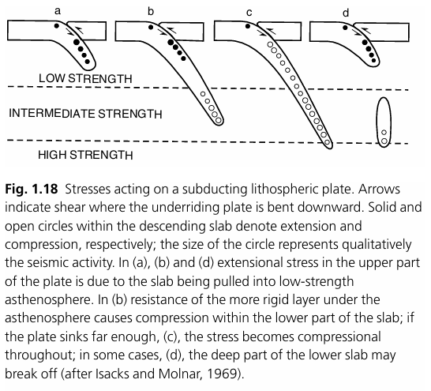
隱沒岩石圈內的應力（Isacks & Molnar, 1969）：實心圓＝拉張、空心圓＝壓縮；圓越大地震越活躍。上部被拉入低強度軟流圈而拉張，下部頂到高強度層則壓縮，有時深部斷裂脫落。Stresses in a subducting slab (Isacks & Molnar, 1969): solid = extension, open = compression; circle size = seismicity. The upper slab is pulled into weak asthenosphere (extension); the lower slab meets stronger mantle (compression); sometimes the deep slab breaks off.
地震為什麼會「往下斜著排」？Why do earthquakes line up on a dipping plane?
在日本、馬里亞納這類地區，地震從海溝附近的淺源，往陸側逐漸變深到 600–700 km。這條斜面叫 Wadati–Benioff zone——正是隱沒板塊的位置。In Japan or the Marianas, earthquakes deepen landward from the trench to 600–700 km. This inclined plane is the Wadati–Benioff zone: the subducting slab itself.
延伸：為什麼隱沒板塊上半部是拉張、下半部是壓縮？Extension: why is the upper slab in extension and the lower slab in compression?
板塊像被重力往下拉的繩子：上段被拉（extension），下段撞到較硬的地函像柱子被壓（compression）。這也是為什麼「深源地震」本身就是隱沒的證據——沒有冷、硬的板塊，600 km 深處不可能有脆性破裂。Think of the slab as a rope pulled down by gravity: the upper part stretches, the lower part hits stronger mantle and is squeezed. This is why deep earthquakes are themselves evidence of subduction: without a cold rigid slab, brittle failure at 600 km would be impossible.
We observe earthquakes from shallow to deep, which provides evidence of ______.
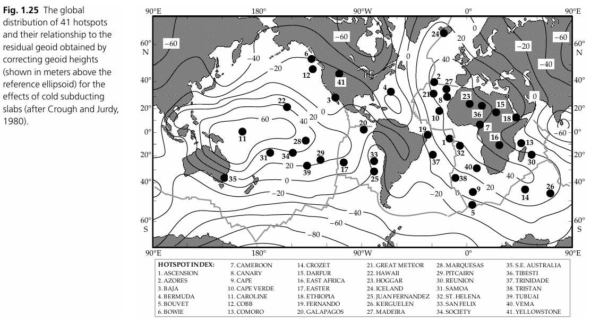
全球 41 個熱點與殘餘大地水準面（Crough & Judy, 1980）。熱點多半不在板塊邊界上——它們是「不屬於三種邊界」的火山。41 hotspots and the residual geoid (Crough & Judy, 1980). Most hotspots are not on plate boundaries: volcanoes that fit none of the three models.
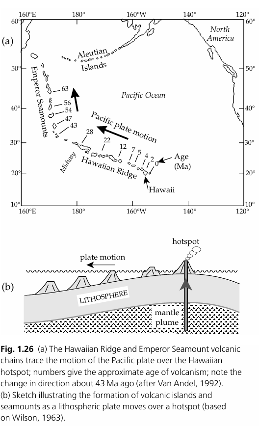
夏威夷海嶺與皇帝海山鏈記錄太平洋板塊經過固定熱點的軌跡；約 43 Ma 前方向轉折（Van Andel, 1992；Wilson, 1963）。The Hawaiian Ridge and Emperor Seamounts trace the Pacific plate over a fixed hotspot; note the bend at ~43 Ma (Van Andel, 1992; Wilson, 1963).
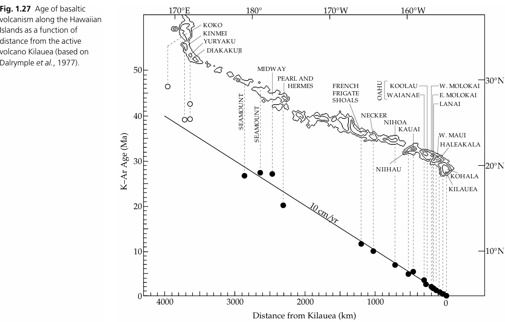
K–Ar 年齡 vs. 距 Kilauea 距離：斜率約 10 cm/yr（Dalrymple et al., 1977）。K–Ar age vs distance from Kilauea: slope ≈ 10 cm/yr (Dalrymple et al., 1977).
迷你實驗：用火山島當里程表Mini-lab: volcanic islands as an odometer
如果熱點固定不動、板塊以 10 cm/yr 移動，離 Kilauea 一定距離的島應該有多老？拉動距離，再對照圖上的實測年齡。If the hotspot is fixed and the plate moves at 10 cm/yr, how old should an island at a given distance from Kilauea be? Drag the distance, then compare with the measured ages.
≈ 10 Ma
Midway 距 Kilauea 約 2,400 km，實測約 27 Ma；你的預測接近嗎？哪裡開始偏離直線？為什麼皇帝海山鏈會轉彎？Midway is ~2,400 km away and dated ~27 Ma. Is your prediction close? Where do the points leave the line? Why does the Emperor chain bend?
If the hotspot is fixed and our model is correct, we should also observe ______.
五、真實案例與 CER5. Real cases & CER
“Why is there a trench? Why are volcanoes behind the trench? Why do earthquakes become deeper?”為什麼有海溝？為什麼火山在海溝後方？為什麼地震愈來愈深？
選一個案例，先看證據，畫地下剖面，再用 Claim–Evidence–Reasoning 寫出你的解釋。寫完才展開參考答案。Choose a case, study the evidence, sketch the section underground, then write your Claim–Evidence–Reasoning. Open the model answer only after you have written yours.
六、Mystery Region 小組挑戰6. Mystery Region team challenge
每組一個區域。回答五個問題，最後一題是預測：如果模型正確，還應該看到什麼？One region per team. Answer five questions; the last one is a prediction: if the model is right, what else should we see?
小組報告框架Team report frame
Observation We observe that ______.
Claim We think this region is ______.
Evidence Our evidence is ______.
Reasoning This can be explained by ______.
Prediction If our model is correct, we should also observe ______.
七、AI 第二輪驗證與模型修正7. AI second-round check & model revision
“Do not ask AI for the answer before you build your own model.”在你建立自己的模型以前，不要先問 AI。
有人說「有火山就是聚合型」。反例：冰島在中洋脊上，也有大量火山；夏威夷根本不在板塊邊界。Someone says "volcanoes mean convergent". Counter-examples: Iceland sits on a mid-ocean ridge with many volcanoes; Hawaii is not on any boundary.
Is our original model still sufficient?原本的模型還夠用嗎？不夠。火山本身不能單獨決定板塊環境。
結論：需要多重證據（multiple lines of evidence）——斷層型態、地震深度、地形、GPS 方向一起看。Conclusion: use multiple lines of evidence: fault type, earthquake depth, landforms and GPS motion together.
判斷 AI 回答的三個問題Three questions for judging an AI answer
它用了我給的全部證據，還是只挑了一個？Did it use all my evidence, or pick just one?
Manila Trench馬尼拉海溝：歐亞板塊（南海）向東隱沒到菲律賓海板塊之下Eurasian (South China Sea) plate subducts eastward beneath the Philippine Sea plate
Real Earth is more complicated than our diagrams.真實地球比課本中的模型更複雜。兩個方向相反的隱沒帶、一條碰撞帶、無數活斷層，全擠在一個島上。
Taiwan is not simply ______; it includes ______, ______ and ______.
九、時事案例：喀拉喀托之子「冒出新島」9. News case: new land at Anak Krakatau
“Can plate motion push up two islands in 25 hours?”板塊運動能在 25 小時內推出兩座島嗎？
一則新聞可以同時練習媒體識讀與板塊構造。這個案例把三種時間尺度串在一起：板塊隱沒（百萬年）、海峽張裂（萬年到百萬年）、火山堆積（幾小時）。先查證新聞，再看構造背景，最後比較尺度。One news story can train media literacy and plate tectonics together. It links three time scales: subduction (millions of years), rifting of the strait (10⁴–10⁶ years) and volcanic deposition (hours). Verify the news first, then look at the tectonic setting, then compare the scales.
A. 先查證：哪些是觀測，哪些是解讀？A. Verify first: measurement or interpretation?
同一件事，新聞標題寫「冒出 2 座島」，官方講的卻是「待驗證的地貌變化」。把每一句話分類，再展開說明。The headline says "two new islands appeared"; the agency says "a landform change that still needs field checking". Sort each statement, then open the note.
A headline is a claim. A measurement is evidence.標題是一個主張，測量才是證據。
B. 一座火山島的生命週期B. The life cycle of a volcanic island
1883大爆發後山體崩毀，留下破火山口。The great eruption destroys the edifice and leaves a caldera.
1927 →破火山口內長出新火山「喀拉喀托之子」（Anak Krakatau）並露出海面。A new cone, Anak Krakatau ("child of Krakatau"), grows inside the caldera and breaks the sea surface.
2018側翼崩塌約 0.116 立方公里，山頂從約 330 公尺降到 120 公尺；隨後的海嘯最高約 13 公尺，437 人罹難。Flank collapse of ≈0.116 km³; the summit drops from ≈330 m to 120 m. The tsunami reaches ≈13 m and kills 437 people.
2019 →進入重建期，火山重新生長。A rebuilding phase begins and the volcano grows again.
9/4–6約 25 小時的噴發後，火山本體陸地面積增加約 32.8 公頃，並在西北側距岸約 760 公尺、東南側約 495 公尺處出現兩處新陸地。After ≈25 hours of eruption the island gains ≈32.8 ha, and two patches of new land appear ≈760 m offshore to the north-west and ≈495 m to the south-east.
C. 構造背景：隱沒帶上的張裂C. Tectonic setting: extension on top of a subduction zone
示意圖：深度依右側尺標，垂直方向略為誇大。印澳板塊隱沒到巽他板塊之下，板塊在火山正下方約 150 公里深；岩漿在約 30–60 公里生成，海峽同時處於伸張兼走滑的環境，火山則把噴發物堆在淺海上。Schematic; depths follow the scale on the right, vertical exaggeration ≈1.4×. The Indo-Australian plate subducts beneath the Sunda plate and lies ≈150 km below the volcano; magma is generated at ≈30–60 km, the strait is under transtension, and the volcano piles its products onto a shallow sea floor.
三層證據Three layers of evidence
Sunda arc: Indo-Australian plate subducts beneath the Sunda plate, ≈58 mm/yr trench-normal convergence巽他弧：印澳板塊以每年約 58 mm 隱沒到巽他板塊之下
Magma generated at ≈30–60 km; the slab beneath Krakatau lies at ≈150 km岩漿生成深度約 30–60 公里；隱沒板塊在約 150 公里深
The strait sits at the change from frontal subduction (off Java) to oblique subduction (off Sumatra)海峽位在正向隱沒（爪哇外海）與斜向隱沒（蘇門答臘外海）的轉換帶
The Sumatran forearc sliver moves north-west along dextral faults → transtension蘇門答臘弧前條狀地塊沿右移斷層往西北移動 → 伸張兼走滑
Total extension across the strait ≈50–100 km; palaeomagnetism shows Sumatra rotating clockwise relative to Java for ≥2 Myr海峽總伸張量約 50–100 公里；古地磁顯示至少 200 萬年來蘇門答臘相對爪哇順時針旋轉
Focal mechanisms in the strait are extensional, tension axis N130°E; Krakatau sits where two graben zones meet a N–S shallow seismic belt海峽內震源機制呈張裂，張力軸 N130°E；喀拉喀托正位於兩條地塹帶與一條南北向淺震帶的交會處
Why it matters 聚合型邊界上竟然是張裂應力——這正好用來打破「聚合＝只有壓力」的簡化模型，並示範「多重證據」如何修正模型。Extensional stress on a convergent margin: a clean counter-example to "convergent means compression only", and a demonstration of how multiple lines of evidence revise a model.
C2. 真實資料版本：地震與地形剖面（PyGMT）C2. The real-data version: earthquakes and topography (PyGMT)
上面的示意圖是簡化過的剖面；這兩張圖是同一段構造的真實資料版本——即時抓取 USGS 地震目錄與 NCEI/GVP 全新世火山清單、疊上 GMT 全球地形畫出來的，可以直接對照示意圖裡畫的隱沒角度與火山弧位置。The schematic above is a simplified cross-section. These two figures are the real-data version of the same structure — drawn from a live pull of the USGS earthquake catalogue and the NCEI/GVP Holocene volcano list, overlaid on GMT global topography — so you can check the schematic's subduction angle and arc position against actual data.
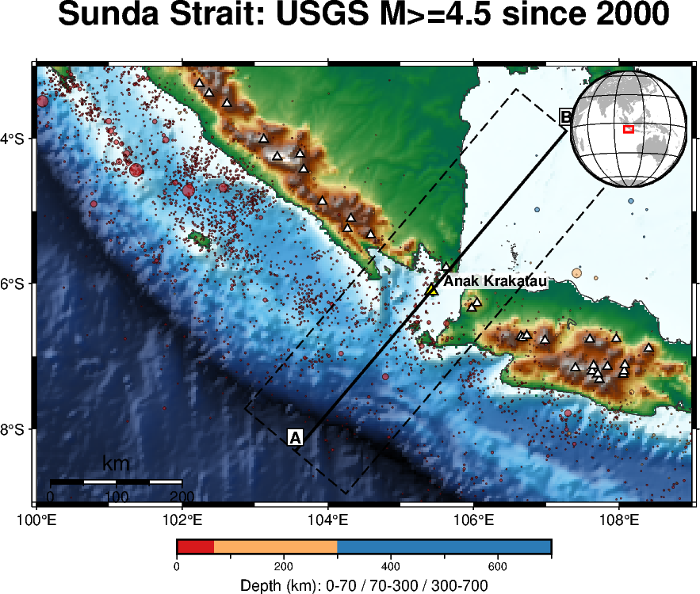
地圖範圍 100–109°E、9–3°S。海溝（西南側深藍）、火山弧（白色三角，共 31 座全新世火山）沿蘇門答臘東南岸與爪哇西岸排列，喀拉喀托之子（黃色三角）正位在海溝與弧後之間。地震（USGS，2000 年起 M≥4.5）沿海溝密集分布，顏色代表深度。Region 100–109°E, 9–3°S. The trench (deep blue, south-west) and the volcanic arc (white triangles, 31 Holocene volcanoes) line up along the Sumatra and Java coasts; Anak Krakatau (yellow triangle) sits between the trench and the back-arc. Earthquakes (USGS, M≥4.5 since 2000) cluster along the trench, coloured by depth.
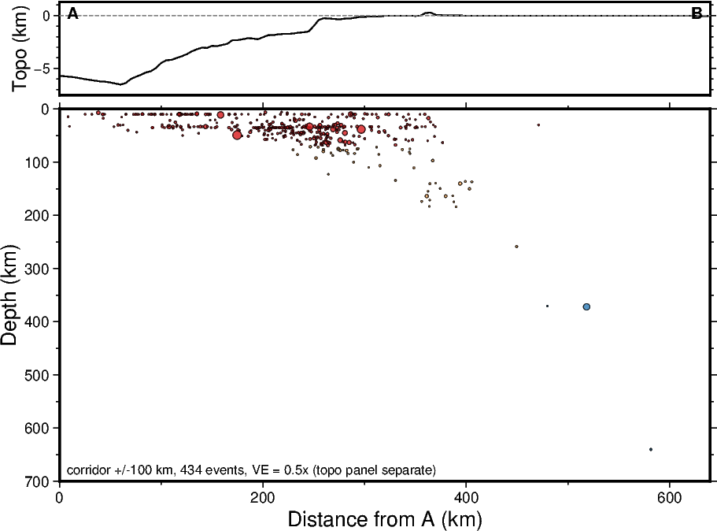
A–B 剖面大致垂直海溝走向、穿過喀拉喀托之子（走廊半寬 100 km，434 筆地震）。下圖清楚看到一道從淺到深、向東北傾斜的地震帶（Wadati-Benioff 帶），最深達約 600 km——這就是示意圖裡那條隱沒板塊的真實版本。The A–B profile runs roughly perpendicular to the trench through Anak Krakatau (corridor half-width 100 km, 434 events). The lower panel shows a clear NE-dipping earthquake belt (a Wadati-Benioff zone) reaching ≈600 km deep — the real-data counterpart of the subducting slab drawn in the schematic above.
D. 時間尺度實驗：是板塊「推」出來的嗎？D. Time-scale lab: did plate motion push this land up?
拉動滑桿，比較同一段距離：板塊要走多久？這次噴發只用了 25 小時。Drag the slider and compare the same distance: how long does the plate need? The eruption took 25 hours.
≈ 13,103 yr
聚合速率取 58 mm/yr（巽他海溝垂直分量）。Using the 58 mm/yr trench-normal convergence rate of the Sunda Trench.
Plate motion supplies the magma and the pathway. The eruption builds the land.板塊運動提供岩漿來源與張裂通道，火山作用才是直接造出陸地的原因。
E. 課堂怎麼用E. How to use it in class
釐清迷思Break the misconception
「新島是板塊推出來的」是錯的。板塊一年只移動幾公分；這次的新陸地是 25 小時噴發堆出來的。讓學生自己算出兩個數量級的差距。"Plates pushed the islands up" is wrong. Plates move a few centimetres a year; this land was piled up in 25 hours. Let students compute the gap themselves.
連結臺灣Link back to Taiwan
巽他海峽＝隱沒帶火山弧＋張裂。可以對照沖繩海槽的弧後張裂與龜山島，也可以對照呂宋島弧的綠島、蘭嶼。The Sunda Strait = a subduction-related arc plus extension. Compare it with back-arc rifting in the Okinawa Trough (Guishan Island) and with the Luzon arc (Green Island, Orchid Island).
2018 年的崩塌沒有產生強烈的短週期地動，但寬頻地震儀記錄得很清楚。海嘯在毫無預警下侵襲沿岸——正好討論以地震規模為基礎的預警系統有哪些盲點。The 2018 collapse radiated little short-period energy but was clear on broadband seismometers. The tsunami arrived with no warning: a case study in the blind spots of magnitude-based warning systems.
動手活動：自己量一次Hands-on: measure it yourself
用 Copernicus Browser 比較噴發前後的 Sentinel-2 影像，讓學生自己估算面積變化，再和官方公布的 32.8 公頃對照，討論誤差從哪裡來（雲、潮位、解析度、判釋標準）。Compare Sentinel-2 scenes before and after the eruption in the Copernicus Browser, estimate the area change, then check it against the official 32.8 ha and discuss where the difference comes from (cloud, tide, resolution, interpretation).
鬆散的火山碎屑堆在淺海，會被波浪與海流侵蝕。請學生提出一個可以檢驗的預測，並說明要用什麼資料驗證。Loose volcanic debris on a shallow sea floor is attacked by waves and currents. Ask students for one testable prediction and the data they would use to check it.
語言任務 CLILCLIL language task
用本頁的句型把新聞改寫成一句科學陳述，先說觀測，再說解讀。Rewrite the headline as one scientific sentence using the page's frames: observation first, interpretation second.
We observe ______, which is interpreted as ______, but it still needs ______.
F. 寫下你的 CER：這兩塊新陸地是怎麼來的？F. Write your CER: where did this new land come from?
展開參考 CER（寫完再看）Open the model CER (after writing yours)
Claim新陸地是噴發物在淺海堆積形成的火山地形，不是板塊運動抬升的島。The new land is a volcanic deposit built on a shallow sea floor, not an island uplifted by plate motion.
Evidence它緊鄰活火山、出現在約 25 小時的噴發之後、火山本體同時增加約 32.8 公頃，而古破火山口一帶海底本來就淺。It lies next to an active volcano, appeared right after a ≈25-hour eruption, the island itself gained ≈32.8 ha at the same time, and the sea floor inside the old caldera is shallow.
Reasoning隱沒作用提供岩漿、張裂提供通道，但它們的速率是每年公分等級；能在幾小時內堆出陸地的只有火山噴發的火山灰、岩塊與熔岩。因此板塊運動是背景條件，火山作用才是直接原因。Subduction supplies the magma and extension supplies the pathway, but both work at centimetres per year. Only erupted ash, blocks and lava can build land in hours, so plate motion is the background condition and volcanism is the immediate cause.
查證來源Sources checked
課堂上請學生打開至少兩個不同性質的來源（媒體、官方／通訊社、期刊），並說出它們的差別。Ask students to open at least two different kinds of source (media, agency/wire, journal) and describe how they differ.
不必背很多英文，只要反覆使用幾個句型。點喇叭聽發音，點句子複製。You don't need a lot of English; you need a few frames used again and again. Tap the speaker to listen, tap a sentence to copy it.
核心句型Core sentence frames
三個最重要的字Three words that matter most
A trench can provide evidence of subduction.海溝可以提供隱沒作用的證據。
We observe a trench, which provides evidence of subduction.我們觀察到海溝，它提供了隱沒作用的證據。
三種應力Three kinds of stress
關鍵概念統整表Key concept summary
Plate boundary板塊邊界
Motion運動
Stress應力
Fault斷層
Earthquakes地震
Volcanoes火山
Landforms地形
Divergent張裂型
apart ← →
tension張力
normal正斷層
shallow淺源
common常見
ridge, rift, basin洋脊、裂谷、盆地
Convergent聚合型
together → ←
compression壓力
reverse / thrust逆斷層／逆衝斷層
shallow–deep淺至深
often常有（碰撞帶少）
trench, arc, mountains海溝、島弧、山脈
Transform錯動型
slide past ↑ ↓
shear剪力
strike-slip走向滑移斷層
shallow淺源
usually few通常很少
fault valleys, offsets斷層谷、水平錯移
十一、Exit Tickets11. Exit tickets
每節課最後五分鐘。先寫自己的答案，再點開參考答案。The last five minutes of each lesson. Write your own answer first, then open the reference.
十二、評量與學習歷程12. Assessment & portfolio
評量設計Rubric
Observation
20%
能否從圖表找出有效證據Can you extract valid evidence from data?
Scientific model
30%
能否建立合理因果模型Can you build a reasonable causal model?
CER
25%
Claim、Evidence、Reasoning 是否一致Are claim, evidence and reasoning consistent?
Model revision
25%
能否根據新證據／AI 回答修正模型Can you revise the model from new evidence or an AI answer?
The answer is not the only thing we grade.答案正不正確不是唯一評量標準。更重要的是：學生如何從證據走到結論。
學生最後繳交的學習歷程What students hand in
最初判斷Initial judgement
初始模型圖Initial model sketch
CER（主張、證據、推理）CER (Claim–Evidence–Reasoning)
給 AI 的 promptPrompt to AI
AI 回答AI response
自己對 AI 的評價Evaluation of the AI
使用的證據Evidence used
修改後模型Revised model
最終反思Final reflection
如此就能看到學生的 thinking process，而不只是 final answer。「匯出學習歷程」會把本頁所有填寫內容（觀察、CER、預測、AI 驗證、Exit Tickets、護照）整理成一份 Markdown 檔。This makes the student's thinking process visible, not just the final answer. "Export portfolio" collects everything typed on this page (observation, CER, predictions, AI check, exit tickets, passport) into one Markdown file.
Today, the most important thing is not that you remember three types of plate boundaries.
今天最重要的，不是你記得三種板塊邊界。
The important thing is that when you see a trench, a volcano, an earthquake pattern, or a mountain range, you begin to ask: Why?
真正重要的是，當你看到海溝、火山、地震分布或山脈時，你開始問：「為什麼？」
Don't just memorize the Earth. Learn how to read the Earth.